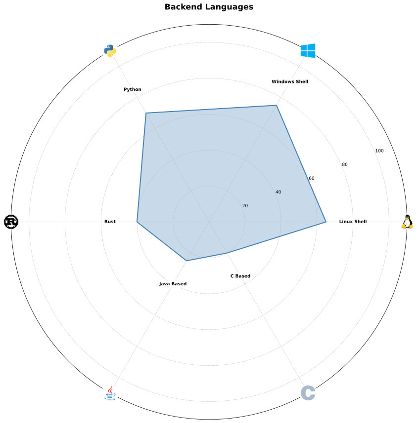
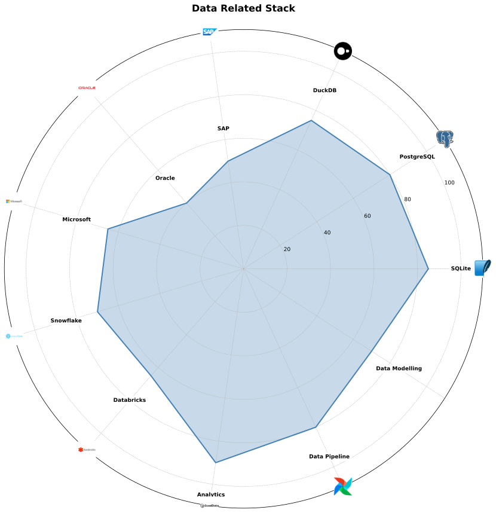
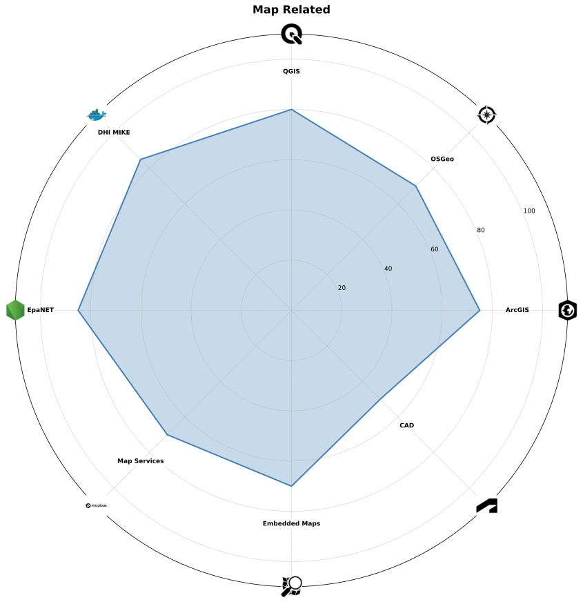

Kube Kubow
I am currently spending the majority of my time around GoodData's integrations with various types of systems.
I have recently started collaboration on an Astrology application.
🚀 Projects
Star Encyclopedia
Summarizing all things around us 🌅
Small Applications
Small applications with specific usage
Python database logs reader
mostly SAP, Microsoft, Oracle...
Python EpaNET simple GUI
I plan to interconnect with Mike0/dfs
Python contacts editor
those ancient VCards
Python planet/moon compute
using NASA JPL ephemerides
Python universal browser/editor
currently JSON, XML and CSV files
🛠️ Skills
Frontend

Backend
Linux Shell: sh, zsh, bash and various tools (like sed, grep, ...)
Windows Shell: bat, powershell, vbscrips
Data
SAP: ASE, Anywhere, IQ and HANA
Microsoft: MSSQL, Access, VBA, PowerBI
Analytics: GoodData, PowerBI
Data Pipeline: airflow, n8n, dbt, dlt, etc.
Data Modelling: erwin, powerdesigner
Map
Map Services: mapbox, maplibre, osm
Embedded Maps: OpenLayers, leaflet, D3